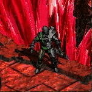

MEDIAN XL: ULTIMATIVE v7
HTML Documentation v2.3 pre-release
Pre-Release by Quirinus, aahz and WolfieeifloW
Online HTML Documentation v2.3 pre-release for MXL: Ultimative v7
We decided to share a pre-release version because there's still more work to do until the final chm version (it's mostly completed though), and we wanted you to have something to use until then.
Making a .chm file version will take more time since it uses ancient html code formatting and interpretation (thanks Microsoft),
so we have to rewrite some code in order to make it work correctly when viewing it.
This version should work well in most of the modern browsers (IE 9, Mozilla Firefox 20, Google Chrome 26, Opera 12).
Download
Or you can download the offline HTML version here:
Offline HTML Documentation v2.3 pre-release for MXL: Ultimative v7.rar
Features
Help us
If you see anything that's incorrect, incomplete or ill-formatted, please help us by posting it on the forum so we can correct it for the final version!
Thanks
We wish to thank everyone that contributed:
